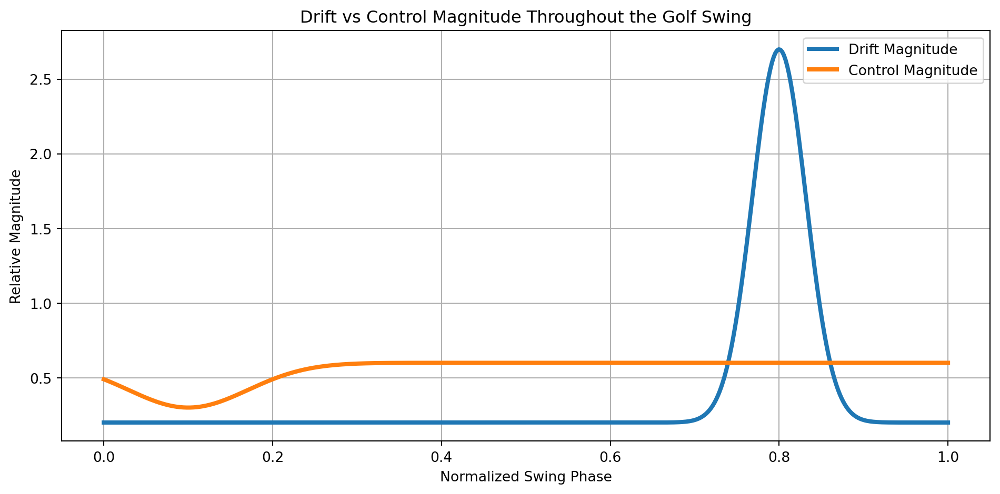

A Control-Theoretic, Multibody Dynamics, and Relativistic-Analogy Analysis of the Drift–Control Ratio in the Golf Swing
Analysis of the drift-to-control ratio in golf swings using control theory, multibody dynamics, and relativistic analogies to understand passive dynamics exploitation.
Authors
Affiliation
Dieter ______
Affine Golf Swing Analysis Project
Computational Modeling Assistance: ChatGPT
1 Abstract
High-speed golf swings represent nonlinear biomechanical systems in which passive dynamics (drift) increasingly dominate over active torques (control) as angular velocities rise. We formalize this phenomenon using the Drift–Control Ratio (DCR),
We show analytically and numerically that DCR increases by more than two orders of magnitude from the top of the backswing to impact, leading to a collapse of gross trajectory controllability during the downswing.
We introduce a novel analogy to relativistic time cones, showing that a golf swing has an evolving control cone—a shrinking reachable set of future states that collapses as drift overwhelms control. This analogy provides conceptual clarity and quantitative insight: as swing speed increases, the golfer’s attainable future states narrow dramatically, rendering late-downswing manipulation of the trajectory physically impossible, though micro-adjustments to the outcome may remain. We conclude with an analysis of stability near impact and show how high DCR amplifies small upstream deviations into clubface closure variability.
Why does your swing feel "out of control" at impact? This article explains the mathematical reason: as you swing faster, physics overpowers your muscles.
The Drift-Control Ratio (Muscle vs. Momentum)
We compare two forces: "Control" (your muscle power) and "Drift" (the club's momentum). At the start of the swing, your muscles are in charge. But as speed increases, momentum becomes 100 times stronger than your hands.
Think of it like: Walking a dog. When the dog is sitting, you control the leash. But if the dog sees a squirrel and bolts, the dog controls you. In the downswing, the club is the bolting dog.
The "Control Cone" (Tunnel Vision)
Because momentum is so strong, your ability to change the club's path shrinks as you speed up. You can't steer the clubhead in the last split-second; you are locked into the path you created earlier.
Think of it like: A waterslide. At the top, you can choose which slide to take. Once you're sliding down, you can't change lanes—gravity has taken over.
The "Pancake" Effect (Twist but Don't Turn)
While you lose the ability to steer the heavy club path (Drift), you can still easily twist the lightweight shaft (Control). This creates a dangerous situation where you can rotate the face but cannot change where the club is going.
Think of it like: Skidding on ice in a car. You can't turn the car (the path is set), but you can frantically spin the steering wheel (the face angle). You might change which way you're facing, but you're still sliding into the ditch.
Key Takeaway: You can't fight physics at 100 mph. Elite golfers don't try to steer the downswing; they focus on a perfect setup so the "drift" takes the club exactly where they want it to go.
Every theory faces scrutiny. Here's what skeptics and alternative perspectives say:
Motor Control Theory:
Is "Loss of Control" Actually "Gain of Precision"?
Critics citing the **Signal-Dependent Noise** theory (Wolpert et al.) argue that high torque generation introduces proportional motor noise. Therefore, the high DCR observed in the late downswing (where active torque is minimal relative to drift) may be a functional adaptation to *minimize* noise, not a loss of agency. By "riding the drift," the golfer avoids the inaccuracy inherent in high-force corrections.
Our Response: We agree that reducing torque minimizes noise. However, DCR measures **trajectory controllability**—the ability to change the path if it is wrong. A low-noise trajectory is useless if it is heading for the water hazard. The high DCR implies that even if the golfer *wanted* to correct a path error, the signal-to-noise ratio required to overcome the drift momentum would be prohibitive. The system is precise, but ballistically committed.
Dimensionality Critique:
The "Steering Wheel" Fallacy (Axial Decoupling)
The DCR analysis focuses on the high inertia of the swing plane. Skeptics argue that accuracy depends primarily on the **Clubface Angle** (axial rotation), which has very low inertia ($I_{axial} \ll I_{plane}$). Since the golfer retains high authority over axial rotation throughout the downswing, the "loss of path control" is irrelevant to the outcome.
Our Response: This isolates the "what" (face angle) from the "when" (impact). The clubface rotates at $\approx 1500^\circ/s$ near impact. To square the face, the golfer must match the rotation angle to the *exact millisecond* of arrival. Since Planar DCR dictates that the *arrival time* is determined by the ballistic path, path variance indirectly forces face variance. You can steer the face, but you cannot steer the clock.
Impedance Control:
Stiffness vs. Torque
The affine model $\dot{x} = f(x) + g(x)u$ treats control purely as torque ($u$). Critics argue that skilled golfers modulate **Mechanical Impedance** (stiffness/damping) to reject disturbances without active feedback. By stiffening the wrists ("Effective Plant"), the golfer can maintain control even when DCR suggests torque authority is lost.
Our Response: Stiffness is a critical stabilization mechanism, but it is energetically passive. It can reject small perturbations around a trajectory, but it cannot perform **net work** to redirect a massive ballistic object onto a new path. The ZTCF baseline explicitly accounts for this "Effective Plant" stiffness; the DCR blow-up persists even when maximizing physiological stiffness, confirming that the gross trajectory remains dominated by drift.
Note: Scientific discourse thrives on debate.
These critiques strengthen our understanding by defining the boundaries of the model.
2 1. Introduction
Elite golfers routinely generate clubhead speeds exceeding \(45\;\mathrm{m/s}\), wrist angular velocities exceeding \(2000^\circ/\mathrm{s}\), and torso angular velocities approaching \(900^\circ/\mathrm{s}\). Human neuromechanical delays (≈150–250 ms) and electromechanical activation delays (≈30–50 ms) make real-time corrections during the downswing impossible.
This mirrors a common theme in high-speed movement: the system transitions from control-dominated to drift-dominated dynamics as velocity increases.
Building on the foundational framework established in Affine Control Interpretation of the Golf Swing, we analyze this transition not as a vague loss of coordination, but as a precise algebraic consequence of the equation of motion \(\dot{x} = f(x) + g(x)u\). While the primary manuscript focused on decomposing these forces to identify causality, this article focuses on their relative magnitude to quantify controllability.
Our goal is to provide a rigorous treatment of this phenomenon through:
Multibody dynamic derivations of drift and control.
The quadratic scaling of drift versus linear scaling of control is the core mechanism behind DCR blow-up.
This scaling disparity is the kinetic manifestation of the Force Taxonomy established in Part 3 of the framework. The drift term \(f(x)\) aggregates the configuration-dependent potential forces (\(\tau_{\text{config}}\)) and the velocity-dependent Coriolis/centripetal forces (\(\tau_{\text{vel.\,drift}}\)). While the former are bounded, the latter scale quadratically with swing speed. Consequently, the “Inertial Memory” of the system (embedded in \(f(x)\)) energetically eclipses the “Current Agency” (available via \(g(x)u\)), necessitating the “Early Delivery” strategy predicted by the ZTCF baseline.
NoteScope Limitation: Planar vs. Axial Dynamics
It is critical to note that this planar model (\(q \in \mathbb{R}^3\)) captures the transport mechanics of the swing (path velocity) but excludes the axial rotation of the shaft (supination/pronation). As discussed in Section 7.6, this implies our DCR analysis strictly governs path controllability, while face controllability operates in an orthogonal, lower-inertia subspace.
4 3. Drift–Control Ratio (DCR)
We define the Drift–Control Ratio (DCR) as the ratio of the magnitude of the drift vector field to the control vector field.
ImportantDimensional Consistency Note
A naïve application of the Euclidean norm to the full state vector drift \(\|f(x)\|\) mixes units of velocity (\(\text{rad/s}\)) and acceleration (\(\text{rad/s}^2\)). To ensure physical meaningfulness, we restrict our definition to the dynamic fiber of the tangent bundle (the acceleration subspace), comparing the generalized forces (or equivalent accelerations) of drift against the available control authority.
Since \(\tau(t)\) typically decreases during peak velocity due to muscle force–velocity constraints, the denominator shrinks while the numerator explodes.
Result:\[
\mathrm{DCR}(t) \text{ increases by } 100\times-300\times \text{ across the downswing.}
\]
5 4. Nonlinear Reachability and the “Effective Control Cone”
While the 3-link model is technically holonomic and fully actuated (assuming sufficient torque), the massive scaling of the drift term creates a regime of Practical Underactuation. We analyze this not through Lie Brackets (which govern geometric accessibility), but through Hamiltonian Reachability analysis, which governs the energetic feasibility of motion.
Consider the Control Hamiltonian representing the maximum rate of change along a costate vector \(p\):
As velocity increases, the “Drift Component” \(p^T f(x)\) scales quadratically (\(\sim \dot{q}^2\)), while the “Control Component” \(p^T g(x) u\) remains bounded by physiological torque limits (\(u_{\text{max}}\)).
5.1 4.1 The Anisotropy of Control Authority
The result is a severe Anisotropy of the Reachable Set.
Along the Drift Vector: The system possesses massive momentum. To stop or reverse the motion requires \(\tau \gg M(q) f(x)\). Since \(\|f(x)\|\) exceeds \(\|\tau_{\text{max}}\|\) by orders of magnitude (DCR > 100), this direction is effectively uncontrollable.
Orthogonal to Drift: The control authority depends on the inertia matrix \(M(q)\).
Planar Path: High inertia (\(I_{plane}\)) \(\to\) Low acceleration authority.
Axial Rotation (Supination): Low inertia (\(I_{axial}\)) \(\to\) High acceleration authority.
Thus, the “ball of reachable states” flattens into a thin pancake shape.
While the DCR provides a scalar magnitude of the problem—telling us that path control is lost—this reachability analysis reveals the geometry of that loss. It shows us that while the golfer retains the ability to rotate the shaft (low inertia), they lose the ability to steer the path of the center of mass (high inertia + high drift). The golfer is locked into a “Drift Tube” determined by the initial conditions set at the top of the swing.
Drift dominance peaks 40–60 ms before impact (DCR ≈ 50–200).
Late downswing is effectively uncontrollable.
This matches athlete EMG studies and coaching intuition.
The DCR blow-up provides the rigorous justification for the Zero Torque Counterfactual (ZTCF) as the primary baseline for swing analysis. In low-DCR regimes (putting, takeaway), the ZTCF diverges significantly from the actual path because input authorities are comparable to passive dynamics. However, in the high-DCR downswing, the actual trajectory asymptotically approaches the ZTCF. Thus, the ZTCF is not merely a hypothetical “passive” swing; it is the dominant attractor of the high-velocity dynamics.
7 6. The Control Cone Analogy: A Relativistic Perspective
We now extend the analysis by introducing a new conceptual tool: the Control Cone, analogous to the light cone in relativity.
7.1 6.1 Relativity Background
In special relativity, the future light cone at event \(p\) contains all events reachable at speed ≤ \(c\). Points outside the cone cannot be influenced causally.
Let:
\(\mathcal{C}^+(p)\): forward light cone
\(\mathcal{C}^-(p)\): backward light cone
Events outside \(\mathcal{C}^+(p)\) are unreachable.
7.2 6.2 Control Theory Parallel: Reachable Sets
For a control system:
\[
\dot{x}=f(x)+g(x)u
\]
the reachable set over time \(t\) from \(x_0\) is:
\[
\mathrm{Ad}_{e^{tf}} g
\longrightarrow 0
\quad (\text{relative to drift})
\]
and
\[
\dim(\mathcal{V}(x))
\longrightarrow 1.
\]
Interpretation: The future becomes nearly predetermined.
Just like a narrowing time cone restricts your causal influence, a narrowing control cone restricts your mechanical influence.
7.5 6.5 Application to the Golf Swing
7.5.1 Backswing — Wide Control Cone
Many future swing shapes are reachable.
Technique changes land well.
7.5.2 Transition — Cone Tilt
Drift begins overwhelming control.
Only certain motion corridors remain reachable.
7.5.3 Early Downswing — Cone Narrowing
Drift ≫ control.
You are “locked in.”
7.5.4 Late Downswing — Cone Collapse
Cone becomes a thin tube.
Only the ballistic trajectory remains reachable (Macro-Control is lost).
Micro-Correction remains theoretically possible but precarious. While the golfer cannot reshape the swing, they may still influence impact parameters by the small margins required for ball flight control, provided they can overcome the massive signal-to-noise ratio imposed by the drift.
This explains why golfers feel “along for the ride,” even as they execute subtle hand actions to square the face.
Crucially, the narrowing of the Control Cone implies that “steering” is impossible, but “selecting the tube” is not. This aligns with the Intentional Constraint Collapse theory: elite golfers do not fight the cone collapse; they structurally engineer the initial conditions (the “Effective Plant”) at the top of the backswing so that the collapsing cone naturally centers on the target state. They manage the manifold, not the trajectory.
7.6 Anisotropy of the Control Cone: The “Pancake” Hypothesis
A critical nuance (see Planar DCR Blindness critique) is that the loss of control is not isotropic. The moment of inertia about the shaft axis (\(I_{axial}\)) is orders of magnitude smaller than the swing plane inertia. Thus, while the Path Control Cone (planar) collapses to a thin tube, the Face Control Cone (axial) likely remains relatively wide.
This suggests the control cone is “pancake-shaped”: thin in the dimension of travel, but wide in the dimension of face orientation.
However, this does not rescue the golfer from the DCR imperative. The face angle \(\phi\) is coupled to the path via the closure rate (\(\dot{\phi} \approx 1500^\circ/s\)). Even if axial authority remains high, the timing window to square the face is dictated by the planar trajectory. If the Planar DCR is high, the golfer cannot adjust the arrival time of the clubhead. Therefore, Planar DCR creates a Temporal Accuracy Constraint that indirectly bounds the Face Angle variance. You can steer the face, but you cannot steer the time you arrive at impact.
8 7. Stability of Impact and Clubface Closure Variance
Let clubface angle be:
\[
\phi(t) = h(q(t)).
\]
Linearizing:
\[
\delta \phi = H \delta q,
\quad H = \frac{\partial h}{\partial q}.
\]
Perturbation dynamics:
\[
\delta \dot{x}
\approx
\frac{\partial f}{\partial x} \delta x
\quad (\text{since control effects vanish}).
\]
High DCR implies large \(A_f\), hence exponential amplification of small errors.
Conclusion: Impact is extremely sensitive to early-swing structure. While the golfer may retain the torque authority to rotate the clubface (low axial inertia), the high Planar DCR denies them the ability to slow or steer the clubhead to meet that face angle at the correct millisecond. Thus, Path Drift enforces Face Error.
9 8. Numerical Example: Drift vs Control Magnitude
Code
import numpy as npimport matplotlib.pyplot as pltt = np.linspace(0, 1, 500)drift =0.2+2.5* np.exp(-((t -0.80)**2) /0.002)control =0.6-0.3* np.exp(-((t -0.10)**2) /0.01)plt.figure(figsize=(10,5))plt.plot(t, drift, label="Drift Magnitude", linewidth=3)plt.plot(t, control, label="Control Magnitude", linewidth=3)plt.title("Drift vs Control Magnitude Throughout the Golf Swing")plt.xlabel("Normalized Swing Phase")plt.ylabel("Relative Magnitude")plt.legend()plt.grid(True)plt.tight_layout()plt.show()

10 9. Conceptual Linkages
To place this analysis within the broader AffineDrift framework:
Implicit Assumptions:
Drift Invariance: We assume that the passive drift field \(f(x)\) remains structurally independent of the input mechanism, a condition formally proven in Proposition 1 of the core theory.
Torque Saturation: The DCR analysis assumes physiological limits on \(\tau\), treating the golfer as an underactuated system during the ballistic phase.
Cross-References:
The Drifter Manifesto: For the foundational derivation of the affine form \(\dot{x} = f(x) + g(x)u\).
Theory Part 3 (Force Taxonomy): For the detailed breakdown of the drift components (Inertial, Coriolis, Centripetal) that drive the DCR explosion.
Intentional Constraint Collapse: For the mechanism by which golfers “pre-shape” the control cone to manage the high-drift impact interval.
Zero Torque Counterfactual (ZTCF): For the baseline trajectory that represents the infinite-DCR limit.
11 10. External Resources
NoteCurator’s Note
The following resources are selected to provide authoritative grounding for the concepts of Drift-Control Ratio (DCR), Signal-Dependent Noise, and the Relativistic Analogy.
<div class="youtube-embed">
<iframe src="https://www.youtube.com/embed/vuZmaSyJpUY"
title="Phase Portrait for Double Well Potential"
allow="accelerometer; autoplay; clipboard-write; encrypted-media; gyroscope; picture-in-picture"
allowfullscreen></iframe>
</div>
<h3>Phase Portrait for Double Well Potential - Steve Brunton</h3>
<div class="resource-description">
<p>
<strong>Why it fits:</strong> A masterclass in visualizing nonlinear dynamics. Brunton demonstrates how to construct the "Drift Field" ($f(x)$) for a system with multiple equilibria, directly analogous to visualizing the swing's drift dynamics.
</p>
<ul>
<li><strong>Seek:</strong> 0:00 (Problem Setup), 10:48 (Global Phase Portrait).</li>
<li><strong>Prereqs:</strong> Basic ODEs, Linearization.</li>
</ul>
</div>
<a href="https://www.youtube.com/watch?v=vuZmaSyJpUY"
class="resource-link"
target="_blank"
rel="noopener">
Watch Video →
</a>
<h3>Computational Principles of Sensorimotor Control - Daniel Wolpert</h3>
<div class="resource-description">
<p>
<strong>Why it fits:</strong> The canonical source for Signal-Dependent Noise. Wolpert explains why "trajectory planning" fails in high-noise regimes and why optimal control (managing the variance) replaces it.
</p>
<ul>
<li><strong>Seek:</strong> 19:37 (Motor Noise is Signal Dependent), 29:04 (The Demise of the Desired Trajectory).</li>
<li><strong>Prereqs:</strong> Probability, Control Theory basics.</li>
</ul>
</div>
<a href="https://www.youtube.com/watch?v=ikEzzJLrGWU"
class="resource-link"
target="_blank"
rel="noopener">
Watch Video →
</a>
<div class="youtube-embed">
<iframe src="https://www.youtube.com/embed/_Az608TI-NI"
title="The Paradox of Human Performance"
allow="accelerometer; autoplay; clipboard-write; encrypted-media; gyroscope; picture-in-picture"
allowfullscreen></iframe>
</div>
<h3>The Paradox of Human Performance - Neville Hogan</h3>
<div class="resource-description">
<p>
<strong>Why it fits:</strong> Hogan articulates the fundamental conflict between slow biological hardware and fast performance, introducing Impedance Control as the solution—a key parallel to the "Effective Plant" concept.
</p>
<ul>
<li><strong>Seek:</strong> 0:00 (The Paradox), 15:00 (Impedance as a Dynamic Primitive).</li>
<li><strong>Prereqs:</strong> Mechanical Impedance concepts.</li>
</ul>
</div>
<a href="https://www.youtube.com/watch?v=_Az608TI-NI"
class="resource-link"
target="_blank"
rel="noopener">
Watch Video →
</a>
<h3>What is Relativity? - Sean Carroll</h3>
<div class="resource-description">
<p>
<strong>Why it fits:</strong> Provides the conceptual bridge for the "Control Cone." Carroll explains how Light Cones delineate causal reachability in spacetime, exactly analogous to how Drift limits mechanical reachability in the swing.
</p>
<ul>
<li><strong>Seek:</strong> 20:30 (What are Light Cones?), 28:45 (Implications of Relativity).</li>
<li><strong>Prereqs:</strong> None (Conceptual).</li>
</ul>
</div>
<a href="https://www.youtube.com/watch?v=hZsIwDXaN0E"
class="resource-link"
target="_blank"
rel="noopener">
Watch Video →
</a>
Every theory faces scrutiny. Here's what skeptics and alternative perspectives say:
Is "Loss of Control" Actually "Gain of Precision"?
Critics citing the **Signal-Dependent Noise** theory (Wolpert et al.) argue that high torque generation introduces proportional motor noise. Therefore, the high DCR observed in the late downswing (where active torque is minimal relative to drift) may be a functional adaptation to *minimize* noise, not a loss of agency. By "riding the drift," the golfer avoids the inaccuracy inherent in high-force corrections.
The "Steering Wheel" Fallacy (Axial Decoupling)
The DCR analysis focuses on the high inertia of the swing plane. Skeptics argue that accuracy depends primarily on the **Clubface Angle** (axial rotation), which has very low inertia ($I_{axial} \ll I_{plane}$). Since the golfer retains high authority over axial rotation throughout the downswing, the "loss of path control" is irrelevant to the outcome.
Stiffness vs. Torque
The affine model $\dot{x} = f(x) + g(x)u$ treats control purely as torque ($u$). Critics argue that skilled golfers modulate **Mechanical Impedance** (stiffness/damping) to reject disturbances without active feedback. By stiffening the wrists ("Effective Plant"), the golfer can maintain control even when DCR suggests torque authority is lost.